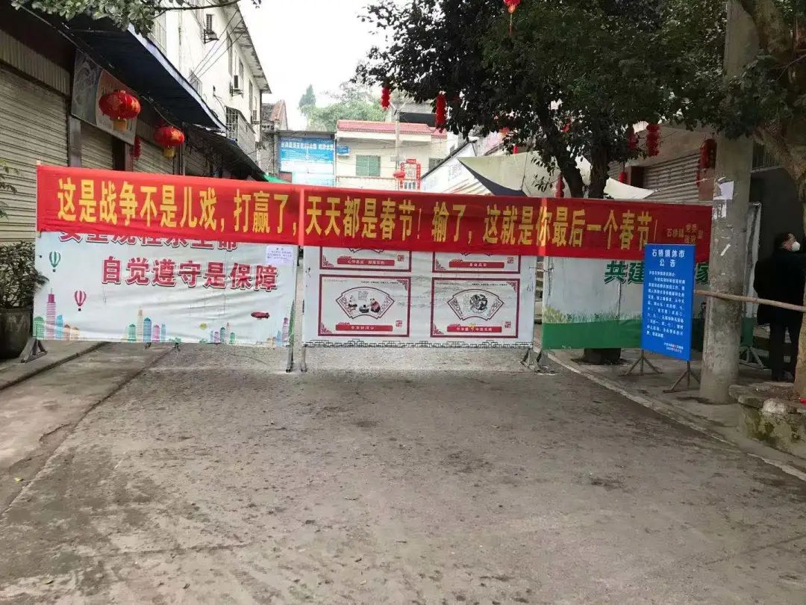
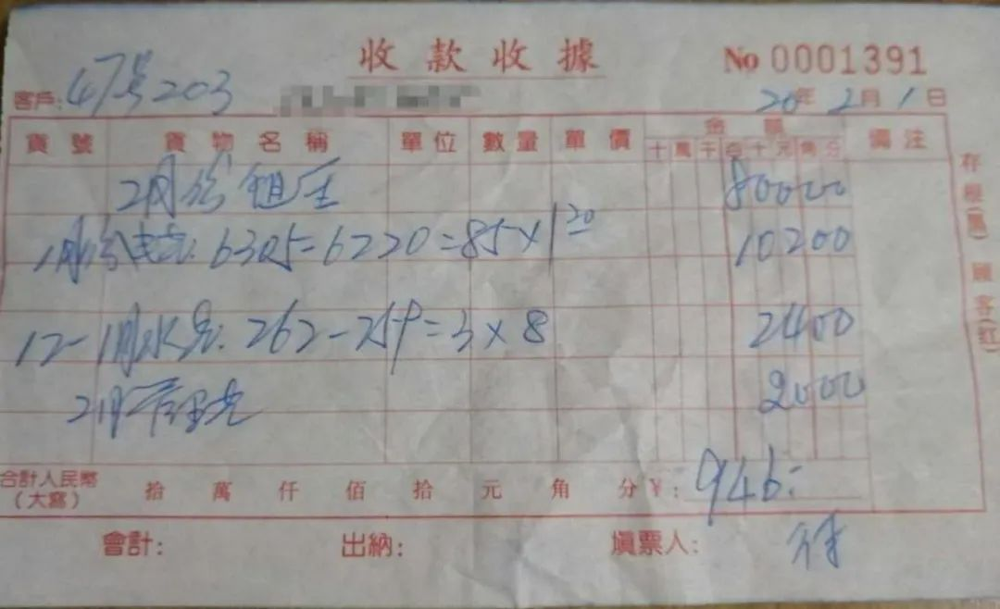

疫情日记 | 武汉封城的第三十四天
原文链接 备份链接 2020.2.25 武汉，每天都不一样，每天都有匪夷所思的新鲜故事，比如防疫指挥部的18号文件直接废除刚发布的17号文件，用行动解释“朝令夕改”，当然，武汉动作更快，还没等到傍晚，下午就急匆匆打自己几耳光。 17号文件 …

摘要：“管全家人吃喝生活，算不算有价值的事情？”

这个春天，人人都被关在家里，吃饭，睡觉，刷手机。但她们的生活有些不同。
她们张罗着全家的一日三餐，留意着哪里有口罩、消毒液，担忧着家人的健康，更迫切渴望能回到深圳复工，却仍看不到希望。
她们是湖北籍女工。
在深圳打工十几年，这是万万在湖北天门老家过得最长的一个春节。
在深圳这个工作不停歇的城市，往年一过初八就会迎来轰轰烈烈的复工潮，八百万外来工中，有相当一部分是湖北人。常来绿色蔷薇社会工作服务中心的姐妹们，在工厂，在工地，做餐饮，做文员……深圳的GDP，也是她们一手一脚做起来的。
但是现在：“我们村都封了，出入口都封了，街道口也都封了，到处都用铁丝网铁皮封锁起来，像打仗那样。”万万说，“坐车更是想都不要想。”她原本计划坐侄子的公交车去镇上，再从镇上转车来深圳，结果镇上通知公交车停运，侄子也不能把车开出去。
湖北孝感的璐璐、湖北荆州的乐萱，因为疫情封锁，一个多月没出过门了。这几个地方都是此次疫情的重灾区，空荡荡的大街充满了消毒水的味道，背后不知上演着多少生离死别。返乡路大多会经过武汉，而大家当时对病毒还缺乏警惕，回家后听说消息后则惶惶不安，直到在家待满14天才开始放心。万万听说最近新确诊的一例离自己家不过几百米，就更不敢出门了。

在她们回不去的深圳，来自湖北黄冈的依依则是20年来第一次在外过年，但她急切地盼望着城市解封，好让她回老家去看看独自一人生活的老妈妈。
她们之间，是一道道铁皮和铁丝网制成的关卡。
村庄、小区一封，买菜做饭就成了一个问题，一个通常都会落在女人身上的问题。
“都是我去买菜。相对来说还是我更适合一些。”虽然还在深圳，依依暂时无法回到做了20年的服装厂车板师岗位，照顾骨折的丈夫、生病的婆婆、无法返学的儿子，外加负责全家人的一日三餐，就成了依依的工作。
依依的丈夫平时会一起买菜做饭，但他年前意外骨折还没好利索；婆婆本身年纪大，又做了手术，抵抗力差；上大学的儿子倒是身强体壮，但他压根儿不认识蔬菜，跟去菜市场相比，他还是更愿意在家刷刷手机、上上网课。一家人要吃要喝，自己不出去谁出去呢？虽然买菜可以上网买，但鱼啊肉啊，还是自己去选比较放心。
猪肉涨价涨得让人不敢买。平时28、29块一斤，过年那两天飞涨到五十多也就罢了，现在38、39一斤是常态。“好贵啊！”依依感叹道，“所以我们都很少吃肉，经常吃蔬菜，但是想一想，老人家身体不好，老公生病了，还有小孩都需要营养，所以还是要买一点肉。我们就买点肉回来煲汤，煮个面条配个汤吃就可以了。过年那天晚饭也是这样的。”
回到孝感的璐璐本来并不担心蔬菜，因为父母种了很多菜，加上年前囤了不少年货，食材还算足够。但是随着时间一天天过去，她也开始为物资发愁，每天都要计算食物还能维持多久。小孩上四年级，正是需要营养的时候，但牛奶和鸡蛋慢慢变得奢侈起来。
万万也一样。虽然囤了年货，但还是打算省着吃，“细水长流”，因为不知道封锁什么时候结束。
好在做家务也给这些勤劳乐观的女性带来乐趣。依依在家琢磨电饭煲蛋糕，万万换着花样做白菜炖肉、萝卜炖肉、萝卜炖鱼，璐璐还把萝卜换个花样做出来，再弄个漂亮的造型。


乐萱是这次遇到的唯一一个不做饭还理直气壮的姐妹。
“我们家我哥做饭。”乐萱轻快的声音从话筒里传出来，“我哥做饭还是不错的。我妈说了，我哥必须得会做饭，将来不能老是让媳妇儿做。不能像我们家一样，我爸天天啥也不干，然后就让我妈做饭。”
但说起做家务这事儿，乐萱还是恼火：“我哥洗个菜那叫干活，做饭也叫干活；我扫地，拖地，擦桌子，收拾屋子，这些都不叫干活。我爸天天说：‘我闺女可真懒哎，什么都不干。’”
在她家的一家之主老爸看来，做饭不属于男人该做的事，做了就是正正经经的“干活”。那女人呢？洗碗、拖地、洗衣服、带孩子，都是女人的分内事，是随手一做的事情。

（照片由乐萱提供）
然而，这些需要做的事情并不少。璐璐家四世同堂，虽然人多，但她不想父母太累，自己就主动多做点事情。依依的出租屋本来是和老公两个人住，现在婆婆、儿子都来了，住不下，自己就只好去工厂的宿舍住，每天早上来到家里做卫生、做饭，晚上再回宿舍。万万时不时要蒸米糕和馒头给家人吃，还坚持每天用消毒水把楼上楼下都拖一遍。
这是她们对家庭责任的分担，是对老人的照顾，是对家人健康的担忧。并不是什么随手一做的琐碎小事。
这些平常就不受重视、不被承认的家务劳动和照顾工作，在疫情下变得更多、更重了。
璐璐每天早上要提醒孩子打卡、准备上网课，上午下午分别监督小孩上两节网课，还要和孩子一起做老师布置的手工、手语舞等作业。她经常没办法拿到手机回复信息，也不像平常那样，每天按时上班、每周一次大扫除，现在是天天都要做家务，“感觉有点虚度光阴”。
自从听说另一个小区有人确诊，村里就发了消毒粉，万万用消毒粉兑水来拖地，是每天都拖！老公上班，女儿上网课，万万就承包了比深圳的出租屋大几倍的房子的卫生。

依依到处留意购买口罩和消毒水的信息，还不敢让老人小孩出门，为了买菜也要咬牙全副武装地出门。因为不能开工，她在家坐一会儿就想做点什么家务，婆婆也总是要洗碗，她们觉得“不动一下就不舒服”，但是儿子和老公却可以一直玩手机，坐着玩一会儿再躺着玩。
依依说：“怎么感觉做的事情没有上班那么多，却比上班还累呢？是心累！要操心的事情太多了，可是一闲下来，又想找点有意义的事情来做。”
我问：“你要管全家人的吃喝生活，这算不算有价值的事情？”
她听了这句话就笑了，说也算有意义。“跟那些患病的人比起来，我们这样已经很好了，毕竟全家人还在一起能吵能闹，能够照顾他们的健康。”
女性承担的巨量的家务劳动和照顾工作，需要我们自己先去承认和赞扬。
大家都在渴望回深圳开工，因为家务劳动不被重视的一个结果是，在家做家务拿不到钱。
“在家怎么说，是轻松一点，也没有很舒服，主要是没有经济来源。”万万是这么考虑的，在深圳虽然辛苦，虽然几平米的出租屋不宽敞，但是刨去600块房租水电，刨去300块生活费，每个月还能剩一两千块。现在呢？因为年纪大了只能打零工，不开工就意味着没有收入。“在家我也没有花太多钱，问题就是要继续交深圳的房租，我又没有多少钱，希望能早一点赚钱……我好想回去哦。”

在深圳的依依则能够感受到对湖北人的警惕。她儿子在江西上大学，疫情爆发后，学校给所有湖北学生建了一个群，说湖北人返校问题要另行通知，这种被区别对待的感觉不是很好。依依所在的工厂已经有几个人复工了：“没有通知我，不知道是不是因为我是湖北人。具体是什么人去上班也不清楚。”
问到璐璐是否有类似的担忧时，她在早上七点孩子上网课前回复我：“什么时候能出门无法估计，要城市解封才行。我们不会给社会添乱，按指令能出去的时候再出门。湖北人不等于病毒。”


请尊重原创，保护版权
本文为绿色蔷薇社会工作服务中心及尖椒部落合作原创作品。欢迎转载，但请保留本段文字：转载自绿色蔷薇社会工作服务中心及中国女工权益与生活资讯平台尖椒部落（jianjiaobuluo.com）。并保留以下作者信息：


原文链接 备份链接 2020.2.25 武汉，每天都不一样，每天都有匪夷所思的新鲜故事，比如防疫指挥部的18号文件直接废除刚发布的17号文件，用行动解释“朝令夕改”，当然，武汉动作更快，还没等到傍晚，下午就急匆匆打自己几耳光。 17号文件 …
原文链接 备份链接 燃财经（ID:rancaijing）原创 作者 | 金玙璠 编辑 | 魏佳 一场疫情，逼着全国人民都学会做凉皮了。 事情还要从外卖不让进小区说起，大家在疫情期间都学会算经济账了：取一次外卖，要消耗口罩一个、一次性手套一 …
原文链接 备份链接 以下文章来源于东四十条资本 ，作者曹玮钰 [东四十条资本 聚焦股权投资行业人物、事件、数据、研究、政策解读，提供专业视角和深度洞见 | 创投圈有趣的灵魂](#) 本文经授权转载自公众号东四十条资 …
原文链接 备份链接 澎湃新闻记者 邵克 3月6日下午，国务院新闻办公室在湖北武汉举行新闻发布会，请中央指导组相关成员介绍新冠肺炎疫情防控救治进展情况，并答记者问。 有记者提问，疫情发生以来，有不少医护人员感染，是什么导致这种情况的发生？另 …
原文链接 备份链接 武汉封城已超过40天，这座长江边上的千万人口特大城市，仍然处在疫情的中心。 在此之前，武汉一直扮演着中国经济地理中心的角色。昔日的“东方芝加哥”、九省通衢之地，曾有过太多荣光时刻。而突如其来的疫情，正裹挟着如今现代化的 …